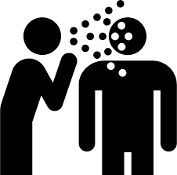
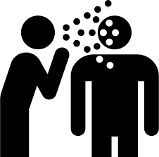

The Holocaust
User Regimes like the Nazis should never have unchecked power, as they often lead to atrocities like genocide.
The Nazi regime's actions during World War II underscore the dangers of extremist governance. Preventing the ascent of such regimes is crucial to upholding democracy and human rights.

In the indescriminate massacre of Jews, about Jewish men, women, and children were killed by the Nazis and their allies and collaborators.

The Holocaust inflicted immense suffering on Jews, employing various methods of brutality.
Mass shootings, gas chambers, and the spread of diseases were among the horrific tactics used. These atrocities exemplify the systematic and ruthless nature of the genocide.
 

The Holocaust targeted not only Jewish individuals but also Soviet prisoners of war, Polish civilians, Romani people, and individuals with disabilities.
They suffered systemic discrimination, forced labor, and mass extermination under Nazi rule, reflecting the regime's pursuit of racial purity.

Antifascist groups in Germany, known as Antifa, combat far-right ideologies and activities through grassroots activism.
They advocate for social justice, equality, and democracy, opposing fascism, racism, and xenophobia. Using protests and community organizing, Antifa works to counter the influence of far-right movements and uphold democratic values amidst criticism and controversy.
Conclusion
The Holocaust's atrocities remind us of the dangers of unchecked power and extremism, from the mass slaughter of millions to the persecution of marginalized groups. We must honor its victims and stay vigilant against fascism, racism, and xenophobia. Advocating for social justice, equality, and democracy, and opposing extremist ideologies, can help prevent such horrors from recurring.